Two elections in one day, 24 October 2026 — do the numbers add up?
Tests do not establish statistical traces of manipulation
6,029 regional-race precincts and 6,024 municipal-race precincts, checked against the same races in 2022. Statistical tests cannot rule out all manipulation.
Plurality winners and a participation gap between races
68% of valid votes in Košický kraj went to other candidates — Rastislav Trnka won with 32.0%
Across 3,556 comparable precincts, the municipal election recorded 79,290 more participants than the regional election
What was decided on 24 October 2026
Slovakia elected governors of 8 self-governing regions (OSK) and mayors of 2,921 municipalities plus the Bratislava and Košice city mayors (OSO). These offices use single-round plurality. Council elections were held alongside them. Official participation: 46.56% regional, 48.48% municipal (2022: 43.75% and 44.86%). All eight incumbent governors were re-elected.
| Region | Winner | Share | Margin over the runner-up |
|---|---|---|---|
| Bratislavský | Juraj Droba SaS, Progresívne Slovensko, Demokrati, Team Bratislava | 70.96% | +59.4 pp |
| Trnavský | Jozef Viskupič Progresívne Slovensko, SaS, KDH, Demokrati… | 54.04% | +33.2 pp |
| Trenčiansky | Jaroslav Baška SMER-SD, HLAS, REPUBLIKA, SNS | 57.44% | +18.4 pp |
| Nitriansky | Branislav Becík HLAS, SMER-SD, SNS, REPUBLIKA… | 50.47% | +21.6 pp |
| Žilinský | Erika Jurinová SLOVENSKO, ZA ĽUDÍ, PS, SaS, KDH… | 52.06% | +26.3 pp |
| Banskobystrický | Ondrej Lunter independent | 64.81% | +49.8 pp |
| Prešovský | Milan Majerský KDH, SLOVENSKO, SaS, PS… | 48.77% | +13.6 pp |
| Košický | Rastislav Trnka independent | 32.00% | +1.3 pp — 3,117 votes |
Matúš Vallo — Bratislava
Ladislav Lörinc — Košice
Three things the numbers say
No manipulation signature established by the tests
The Shpilkin high-turnout tail contains 0.4–4.7% of the leaders' votes; removing it changes their shares by at most 0.6 percentage points. Round-number statistics stay within |z| < 3. Candidate digit tests do not reject their null models; the municipal independents aggregate needs a caveat (second-digit p = 0.017). Simulated stuffing increases the regional tail signal ×6–14, demonstrating sensitivity to that simulation.
The rules let a 32% candidate win
Two of eight governors were elected by a minority (Trnka 32.0%, Majerský 48.8%). For mayors: 13.6% won without a majority, and 37.5% of all mayor-race votes — 779,695 ballots — elected nobody. A second round exists nowhere in the system.
Two ballots, one visit — and two different electorates
Across 3,556 comparable precincts in municipalities with a single municipal electoral district, municipal participation exceeded regional participation by a net 79,290. The largest municipal gaps include Jarovnice (1,726), Zlaté Klasy (1,716) and Bystrany (1,145). The 2022 sample shows a similar gap (99,229 across 3,417 precincts). These aggregate counts do not identify why individuals participated in only one election.
Same voters, different races — what the rules decide
How much do the rules themselves decide? The joint Slovak election is a natural laboratory: two first-past-the-post races, one visit, one electorate. Theory calls the consequences voting paradoxes; here they are simply measurements.
1 · Joint candidacies: bloc totals changed between elections
Joint candidacies in 2026 can be compared with the combined 2022 votes of candidates assigned to the same bloc. Viskupič gained 48%, Becík 81%, Jurinová 68% and Svítková 150%; Baška lost 13%. Several of these blocs already had only one candidate in 2022, so growth cannot be attributed to consolidation alone. In Košický, the opposition total fell from 122,289 to 73,304 (−40.1%). These are comparisons across four years, not a controlled test of vote-splitting or voter transfers.
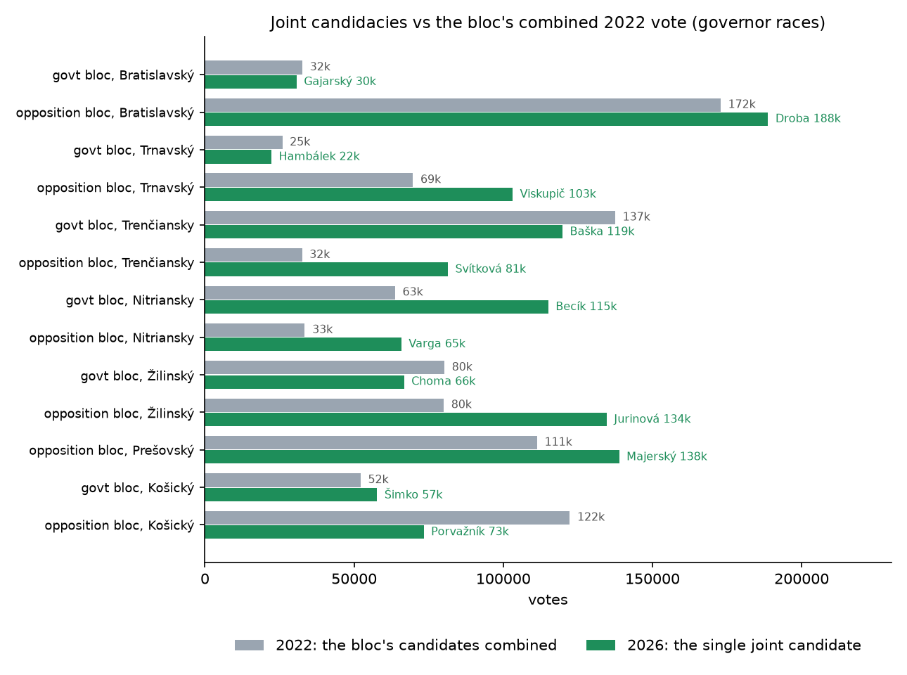
2 · Plurality winners without a majority
In Košický kraj, Trnka won 32.0% of valid votes; 68.0% went to other candidates. His margin was 3,117 votes. Majerský won 48.8% in Prešovský. Among mayors, 134 won with under 40%. A runoff in Košický would involve the top two candidates, with about 37% of first-round votes cast for others. Plurality ballots do not record later preferences, so they cannot determine the hypothetical runoff result. Voting for someone else does not establish opposition to the winner in a runoff.
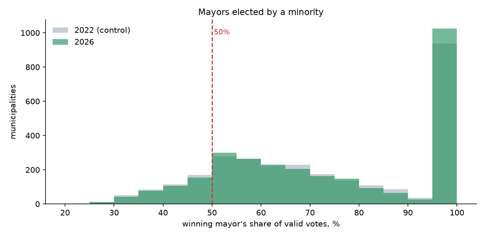
3 · Counting night: no reversal after 38% counted
Thirty-six snapshots cover all eight governor races and eight regional-capital mayor races. No observed leader changed. The first snapshot was taken with about 38% of regional precincts counted nationally; regional count progress was unavailable. Stable leads do not establish that counting was uniform or exclude manipulation before or between snapshots.
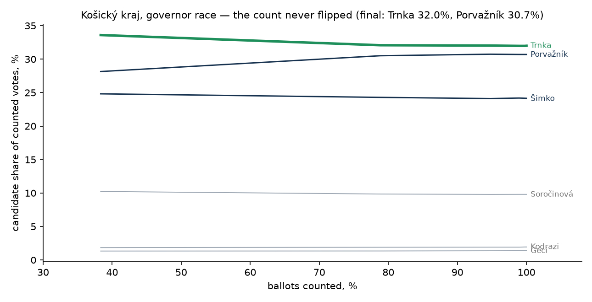
4 · One visit, different participation
The matched sample covers 3,556 precincts in municipalities with a single municipal electoral district. Municipal participation is higher by a net 79,290, with participation rates correlated at r = 0.844. The gap includes 113 precincts with different registered-voter totals. Foreign residents with permanent residence can vote in both elections; EU citizenship does not explain a municipal-only entitlement. The counts show different participation, but do not establish clientelism, coercion or individual voter motives.
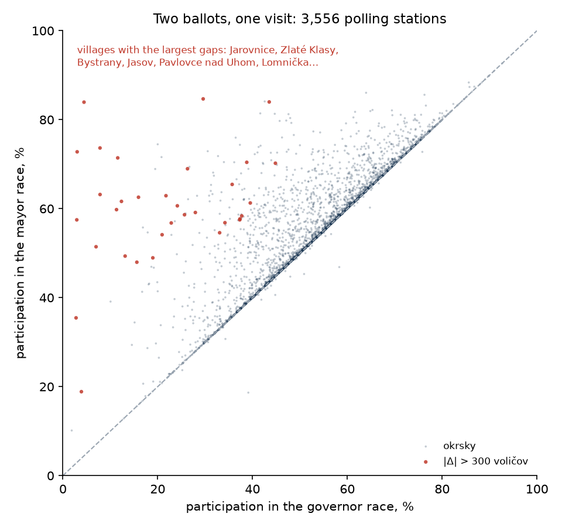
Manipulation detection test results
The official precinct data were checked with the open-source toolkit: eight governor races at regional level, each with its 2022 counterpart as a reference, and the mayor race nationwide. The tests do not establish statistical traces of manipulation. Figures below show Košický, the closest governor race, and the national mayor run; the full report discusses the other regions and limitations.
✓
Anomalous-vote estimate (Shpilkin method)
The tail beyond the honest turnout decline holds 0.4–4.7% of the winner's votes; removing it shifts any result by at most 0.6 points. Same as 2022.
This implementation sets its high-turnout boundary at the electorate-weighted 99.5th percentile of the 2022 reference turnout distribution. It counts all leader votes above that boundary, then recalculates shares after removing all ballots in that tail. It does not fit a Gaussian to estimate fraudulent votes. Governor tails contain 0.42–4.69% of the leaders' votes; the municipal independents aggregate has a 0.43% tail. These are sensitivity calculations, not counts of proven fraudulent ballots.
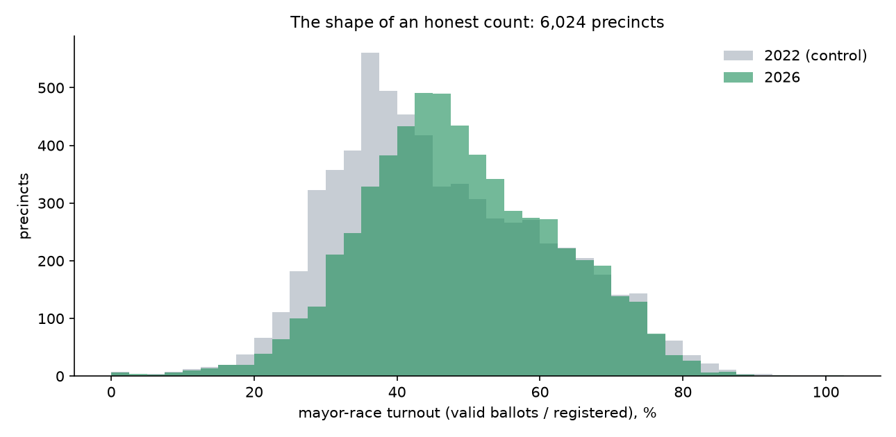
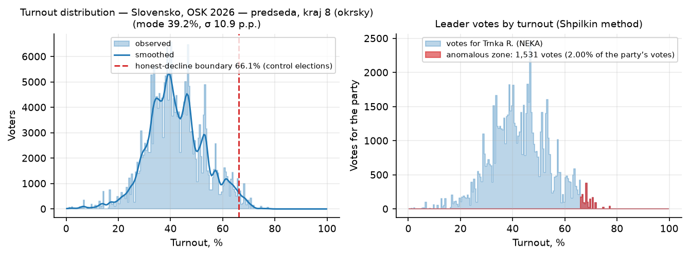
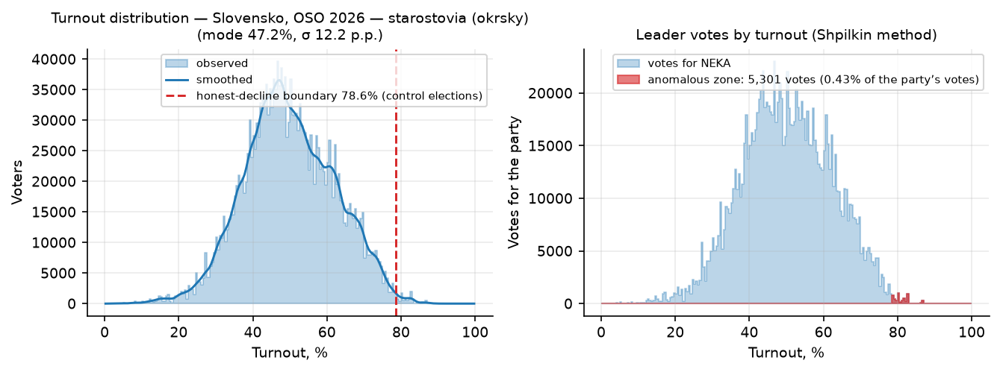
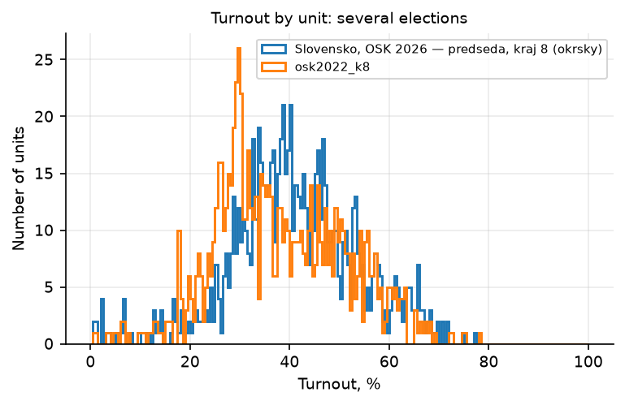
✓
Turnout × result scatter (“comet tail”)
One continuous cloud with a smooth city/countryside gradient — no separate tail of high-turnout, high-result precincts.
What it checks: ballot-stuffing ties high turnout to high result — on falsified data a separate “tail” of 80–100%-turnout precincts stretches toward high results. Here the cloud is one body: the winner's share moves smoothly with turnout, in the winner's favour in Bratislavský and Trenčiansky (urban) and against in Košický (rural mobilisation). Precincts above 80% turnout are rare and small.
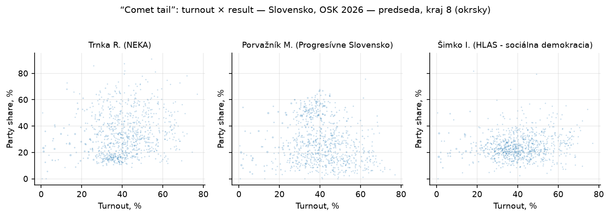
✓
Election fingerprints (Klimek et al.)
The 2-cluster weights sit in the same range as reference clean elections; the 80–100%-turnout fraud island does not exist.
What it checks: Klimek et al. (PNAS 2012) model precincts as a mix of two 2D clusters in the turnout × result plane; falsified elections produce a compact second cluster at 80–100% turnout with near-unanimous results. The second-component weights here (0.41–0.75) match the reference clean elections run with the same tool (Portugal 2025: 0.66; Slovenia 2026: 0.42–0.48), and the density above 80% turnout is empty.
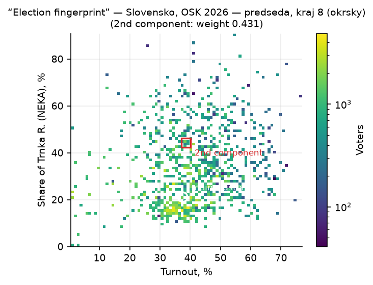
✓
Round-number peaks (Kobak et al.)
No excess of whole-percentage turnouts or results: all statistics within ±2.7, most within ±1.
What it checks: numbers typed in by hand cluster at round values — a turnout ending exactly at a whole percent should be rare. The test compares the share of integer values against a Monte Carlo null built from the same data. Turnout z-scores run −0.3…+2.7 (Trnavský's +2.7 — its 2022 reference scores +3.0, a stable property of its small villages, not handwriting); winner-share z-scores −2.3…+1.5.
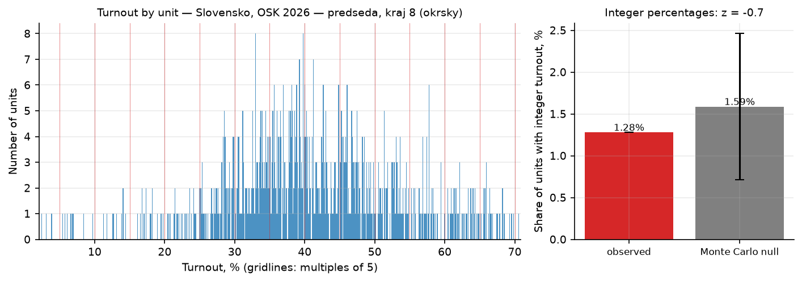
✓
Digit tests (Benford, last digit)
Governor-race digit tests do not reject their respective null models; the pooled independents column in the mayor race has second-digit p = 0.017 and needs an aggregation caveat.
Last-digit tests compare vote-count endings with a uniform distribution; second-digit tests compare with Benford's distribution. Across the eight governor runs, winner and runner-up columns each undergo both tests; the lowest candidate-level Monte Carlo p is 0.065. The municipal independents column pools thousands of candidates and has second-digit p = 0.017. Aggregation and local variation complicate interpretation; this result alone neither proves nor rules out manipulation.
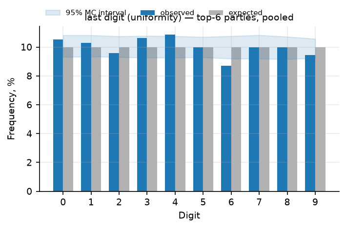
✓
Outliers vs neighbours + machine learning
0–19 flagged precincts per region (0–2.2%), 6.4% in the nationwide mayor run — small places, mixed directions; the same order as clean reference elections.
What it checks: two independent screens — each precinct against the median of its district (robust z-scores, |z| > 4) and an Isolation Forest over four features. Governor races flag 0–19 precincts each (Portugal 2025, same tool: 2.6%). The mayor run flags 383 of 6,024 — expected, because the comparison group (an entire county) mixes municipalities of wildly different competitiveness; the flagged names are the small villages whose mayor race legitimately turns out 80–90% while their region averages 45 (see the differential-participation paradox above).
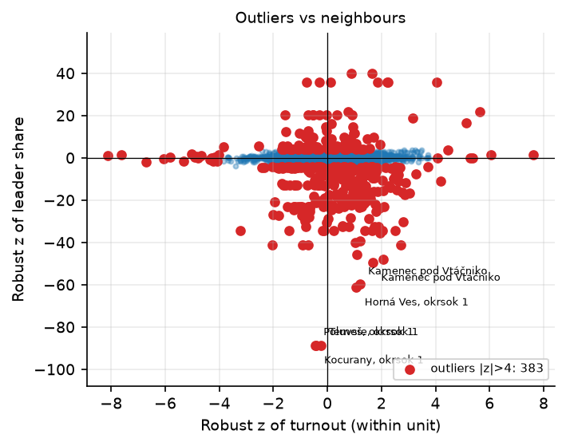
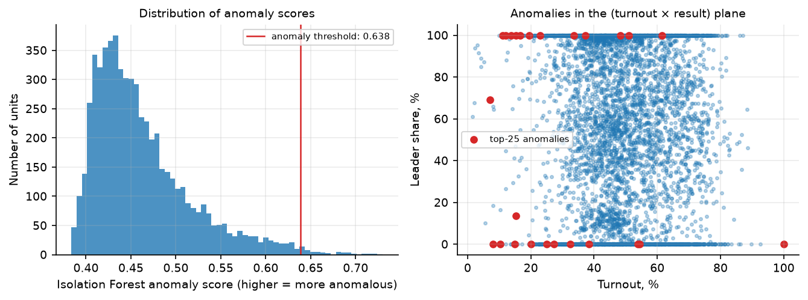
•
Jumps vs the 2022 election (swing test)
635 of 5,442 matched precincts change by more than 15 points in both turnout and the leader's share, in either direction. The +1.5-point median turnout change describes the full matched sample, not the flagged subset.
Across 5,442 matched precincts, mean valid-ballot turnout rises from 48.42% to 49.34%, with a median change of +1.5 points. The swing screen flags 635 precincts where both absolute changes exceed 15 points. National party-share comparisons show independents at 57.75% → 59.79% and HLAS at 9.50% → 6.71%. Party realignment can affect the screen, but small national changes or a small overall median do not explain each flagged precinct.
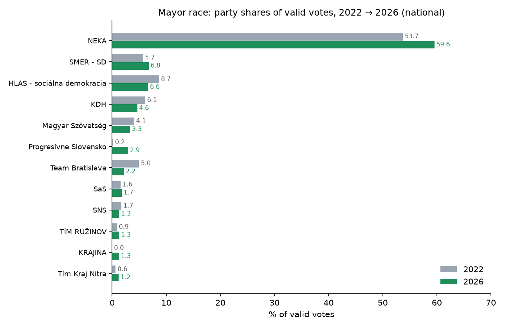
•
Two races, one visit (mutual control)
Participation rates correlate at r = 0.844 across 3,556 comparable precincts; a similar aggregate gap appears in 2022, but its cause is not established.
The comparison joins precincts by municipality and precinct number, restricted to municipalities with one municipal electoral district. Of 3,556 matched precincts, 113 have different registered-voter totals. Municipal participation is higher in 1,938, equal in 1,513 and lower in 105; the net gap is 79,290. In 2022 the separately matched sample contains 3,417 precincts and a net gap of 99,229. Foreign permanent residents are eligible in both elections. This is an aggregate comparison, not a record of the same individuals choosing different ballots.
✓
Self-test: the toolkit actually detects fraud
Injected ballot-stuffing increases the Shpilkin tail signal ×6–14 in the regional runs. This demonstrates sensitivity to the tested simulation, not every possible form of fraud.
What it checks: the toolkit itself. Turnout is raised by 5–35 points in 10% of precincts, with 60–95% of the added ballots for the leader. The Shpilkin anomalous zone grows ×6–14 per region (e.g. Košický: the tail would grow from 2% of the winner's votes to tens of thousands) — on this exact data the methods have power, so their silence on the real numbers means something.
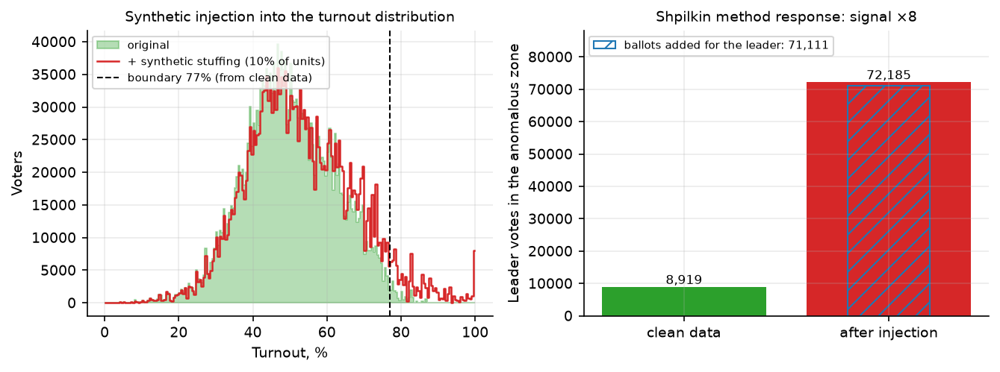
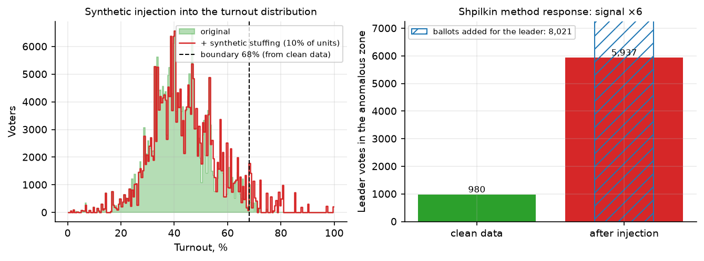
Limitations — what this analysis cannot say
- These tests do not establish manipulation, but cannot exclude it. They cannot identify coercion, clientelist pressure or administrative-resource effects from aggregate counts alone. The participation gap is an observation, not proof of any such mechanism.
- The regional and municipal council races are present in the exports but were not analysed here. Each election also includes a council ballot; “two races” on this page refers only to the governor and mayor contests.
- “Voted” means valid ballots of the analysed race; the official turnout (46.56%/48.48%) additionally counts participants who took no valid ballot of that race (9.6% of regional-race participants in 2026). Bratislava and Košice city-mayor races (2 of 2,914) are checked but not part of the precinct files.
- Precinct keys match the 2022 control for 90–99.5% of precincts (Košice renumbered); the swing test runs on the matched subset only.
Data & reproducibility
- Source: official definitive exports of the Statistical Office of the Slovak Republic — volbysr.sk (OSK/OSO 2026, downloaded 26 October 2026) and volby.statistics.sk (2022 controls).
- Cross-checks: precinct sums equal the official regional and national tables to the exact vote; they also equal the final snapshot of my election-night capture (36 intraday snapshots) for all 8 regions and all 8 city races, and the media-reported headline results (Trnka's ~3,000-vote margin, computed here as exactly 3,117).
- Eligibility and ballot rules: Slovak public-administration portal. Foreign permanent residents can vote in both regional and municipal elections.
- Reproduce and inspect: analysis-tool, full statistical report, paradox analysis and data description.